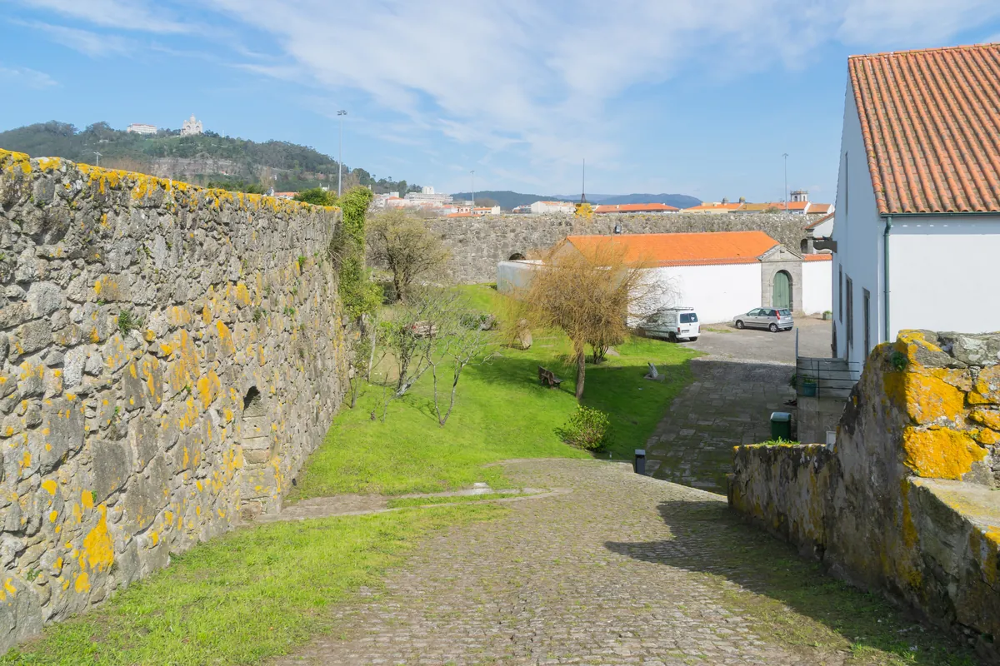
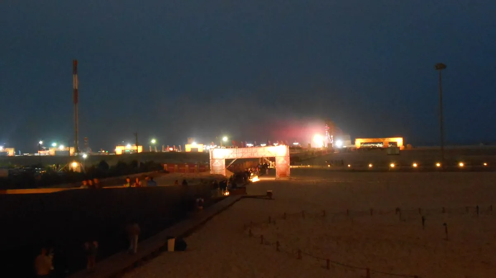
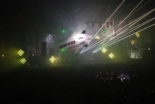
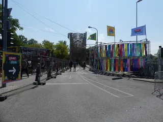
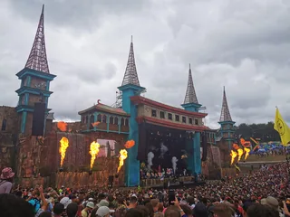

Festival guide, 2027
The best electronic music festivals in Portugal in 2027
The electronic festivals in Portugal compared by sound and setting, from a fort in Viana do Castelo to a beach at Figueira da Foz, with the 2027 dates that are confirmed and the ones that are not.
A list meant for choosing.
Most guides to the music festivals Portugal holds each summer lead with NOS Alive and Primavera Sound, which are rock, pop and indie events with some electronic acts on the bill. The festivals in Portugal where electronic music is the programme are Neopop for techno in Viana do Castelo, Boom for psytrance at Idanha-a-Nova, Sónar and LISB-ON in Lisbon, RFM Somnii on the beach at Figueira da Foz, and two smaller events in June.
How this list was chosen.
A festival is on this list when these three things are true:
- Electronic music is the core of the programme.
- It has run recently, and it has either published a 2027 edition or given no sign of stopping.
- It adds something the others lack: a different sound, a different setting or a different size.
A date from the festival's own site, or from the organisers as reported in the press, is shown as confirmed. Where a festival has not yet announced 2027, the table gives its 2026 date as a guide.
Portugal electronic music festival dates for 2027 at a glance.
The season runs from June to August. Suncébeat New Horizons opens it on the coast south of Lisbon on 17 to 21 June 2027, RFM Somnii and Boom take up July, and Neopop closes it on 5 to 7 August.
| Festival | Where | 2027 dates | Setting | Best for |
|---|---|---|---|---|
| Sónar Lisboa | Lisbon | Not announced (no 2026 edition; return unconfirmed) | City park | Sónar in the capital |
| Suncébeat New Horizons | Costa da Caparica | 17 to 21 June | Beach club, boat parties | Soulful house and disco |
| Waking Life | Crato | Not announced (17 to 22 June in 2026) | Countryside | A small week in June |
| LISB-ON Jardim Sonoro | Lisbon | Not announced (3 and 4 July in 2026) | City park | House and techno in the city |
| RFM Somnii | Figueira da Foz | 9 to 11 July | Beach | Big-stage EDM by the sea |
| Boom | Idanha-a-Nova | 18 to 25 July, sold out | Lakeside estate | Psytrance |
| Neopop | Viana do Castelo | 5 to 7 August | Fort | Techno |
Which is the best Portugal techno festival?
Neopop. LISB-ON in Lisbon also books techno, but alongside house and disco, and it is covered with the Lisbon festivals below.
Neopop, Viana do Castelo
Neopop is held at the Forte de Santiago da Barra, a fort in Viana do Castelo, in the north of Portugal. The 2026 edition, on 6 to 8 August, was its 20th anniversary, and for that year only it ran under the name Antipop. Mixmag counted more than 100 names on that bill, and Lusa listed Goldie, Jeff Mills, Laurent Garnier, Luke Slater and Nina Kraviz among the headliners. A pass cost 130 euros.
The 2027 edition is on 5 to 7 August, back at the fort under the Neopop name. Early-bird passes are on sale through the festival's ticket page, and the line-up has not been announced.

Which Portugal psytrance festival is on in 2027?
Boom, which runs every two years and has a 2027 edition.
Boom, Idanha-a-Nova
Boom is held at Boomland, the Herdade da Granja estate beside the reservoir at Idanha-a-Nova. The 2027 edition is on 18 to 25 July, the festival's 30th anniversary and its 16th edition. Tickets sold out in two hours, according to the festival. For the music, the site and how it compares with Ozora and other psytrance weeks, see the best psytrance festivals.
Which electronic festivals are in and around Lisbon?
Three, each in a different setting: two parks in the city and a beach to the south. For the clubs to visit on the nights in between, see the best clubs in Lisbon.
Sónar Lisboa
Sónar Lisboa is the Lisbon edition of Sónar, held at the Parque Eduardo VII. Its fourth edition, in April 2025, drew about 21,000 people over three days. There was no edition in 2026. In November 2025 the organisers said the dates available for the venue were not the right ones and that Sónar Lisboa would return in 2027. Since then its site has carried only a thank-you to everyone who made the festival what it was, and no 2027 dates have been announced.
LISB-ON Jardim Sonoro, Lisbon
LISB-ON is held at the Jardim Keil do Amaral, a park in Lisbon, and describes its music as disco, house and techno. The 2026 edition was on 3 and 4 July, with Sven Väth, Kerri Chandler, Ben Sims and CamelPhat among the names. The 2027 dates have not been announced.
Suncébeat New Horizons, Costa da Caparica
Suncébeat New Horizons is held at Costa da Caparica, on the Atlantic coast south of Lisbon, on 17 to 21 June 2027. Its main venues are the Praia Irmão and the Waikiki, with boat parties on the Tejo. The music is soulful house, disco, soul and funk. The 2026 edition had more than 3,000 people.
Which music festivals in Portugal are on the beach or in the countryside?
RFM Somnii is the big one on the beach, and Waking Life is the small one in the countryside.
RFM Somnii, Figueira da Foz
RFM Somnii is held on the Praia do Relógio, the beach at Figueira da Foz. The 2027 edition, its 13th, is on 9 to 11 July. It is big-stage EDM: the 2026 bill had Hardwell, Timmy Trumpet and Vini Vici.

The festival runs a campsite, listed on its own site.
Waking Life, Crato
Waking Life is a small festival near Crato, in the Alentejo, held in June. The 2026 edition ran from 17 to 22 June, and the 2027 dates have not been announced. The 2025 edition booked DJ Koze, Theo Parrish, Mr Scruff, and Octo Octa with Eris Drew. It is also on the best electronic music festivals in Europe.
Not on this list, and why.
These are festivals people ask about that fall outside the tests above.
- NOS Alive and Primavera Sound Porto. Both are general music festivals, with rock, pop and indie at the top of the bill and electronic acts as one part of it.
- ZNA Gathering. A Goa trance gathering at the Montargil reservoir in the Portalegre district. Its site has not published 2027 dates.
How to choose.
Pick the setting. Sónar Lisboa and LISB-ON are city festivals, so you can stay in a hotel and spend the days in Lisbon. Waking Life and Boom are in the countryside, away from the cities. Check dates with the festival before you book travel, because three of the 2027 dates above have not yet been published.
Electronic music festivals in Portugal FAQ.
What is the best electronic music festival Portugal has?
It depends on the sound you want. Neopop, at a fort in Viana do Castelo on 5 to 7 August 2027, is the techno pick. Boom, at Idanha-a-Nova on 18 to 25 July 2027, is psytrance and already sold out. RFM Somnii puts EDM on the beach at Figueira da Foz on 9 to 11 July 2027.
When is Neopop Festival Portugal 2027?
On 5 to 7 August 2027, at the Forte de Santiago da Barra in Viana do Castelo, with passes already on sale. The 2026 edition, for its 20th anniversary, ran on 6 to 8 August under the name Antipop.
Is Boom Festival on in 2027?
Yes. Boom runs every two years, and the 2027 edition is on 18 to 25 July at Idanha-a-Nova. Tickets sold out in two hours.
Is Sónar Lisboa on in 2027?
Not confirmed. In November 2025 the organisers said it would return in 2027 after a year off, but no dates have been announced, and the festival's site now carries only a thank-you to its artists and audience. The last edition was in April 2025.
Sources.
- Neopop 2026 (Antipop): Mixmag and Lusa via Notícias ao Minuto, 6 August 2026; 2027 dates and passes: the festival's ticket page on Xceed.
- Boom 2027: Boom's ticket guide and The Portugal Post; tickets: Boom.
- Sónar Lisboa: Echo Boomer, 26 November 2025 and the festival's site.
- LISB-ON: the festival's site and Electronic Groove.
- Suncébeat New Horizons 2027: Echo Boomer, 2 July 2026.
- RFM Somnii 2027: the festival's site, 2026 line-up and RFM.
- Waking Life: Resident Advisor on the 2026 dates and on the 2025 line-up.
- ZNA Gathering: the festival's site.
Continue reading
Read next.
 Festivals~6 min read
Festivals~6 min readBest New Year's Eve Festivals 2026 into 2027
Countdown NYE, Decadence, HiJinx, Rhythm and Vines and Awakenings: the best New Year's Eve festivals for dance music in 2026, with dates and where they are.
Read article →
Festivals~6 min readAwakenings Festival: What It Is and Where It Happens
Founded in Amsterdam in 1997, techno-only ever since: where Awakenings' summer festival and its Amsterdam Dance Event special happen, and why it's called Awakenings.
Read article →
Festivals~7 min readSziget Festival 2027: Dates, Music, Camping and Travel
Five days on Óbuda Island, with pop, rock and hip-hop beside club stages, theatre, circus and a rail link into Budapest.
Read article →
Festivals~7 min readBoomtown Festival 2027: Dates, Location, History and Music
A five-day camping festival built as a fictional city, with soundsystem culture, electronic music, live bands and street theatre.
Read article →Want something to play while you read? Let the Selector pick a DJ set.